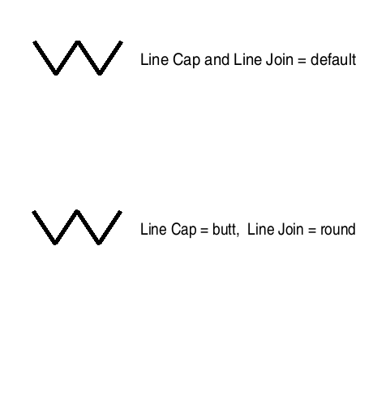

| Source image | Reference image |
|---|---|
 |
This test uses the ACI file to define the viewer default values of the Line Cap and Line Join attributes. As in the reference image, the first line of the CGM is rendered per ACI-specified defaults of butt for Line Cap and bevel for Line Join. The second line of the CGM is rendered after explicit setting of attributes in the CGM body, Line Cap to butt and LineJoin to round.